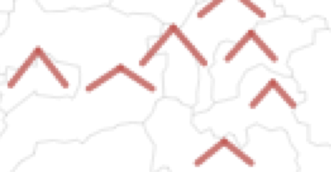
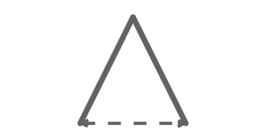

Visualization fundamentals: Codify, map, evaluate
Contents
By the end of this session you should gain the following knowledge:
- Recognise the characteristics of effective data graphics.
- Understand that there is a grammar of graphics, and that this grammar underpins modern visualization toolkits (
ggplot, vega-lite and Tableau). - Be aware of the vocabulary used by these toolkits – that of encoding data through visual channels.
- Be able to select appropriate visual channels given a data item’s measurement type.
- Appreciate how visual channels and evidence of their encoding effectiveness can be used to evaluate data graphics.
By the end of this session you should gain the following practical skills:
- Write
ggplot2specifications that represent data using marks (geoms) and encoding channels (aesthetics– colour and position).
Introduction
This session outlines the fundamentals of visualization design. It offers a position on what effective data graphics should do, before discussing in detail the processes that take place when creating data graphics. You will learn that there is a framework – a vocabulary and grammar – for supporting this process which, combined with established knowledge around visual perception, can be used to describe, evaluate and create effective data graphics. Talking about a vocabulary and grammar of data and graphics may sound alien and abstract, the preserve of Computer Scientists. However, through an analysis of 2019 General Election results data we will demonstrate that these concepts underpin most visual data analysis.
Concepts
Characteristics of effective data graphics
Data graphics take numerous forms and are used in many different ways by scientists, journalists, designers and many more. Whilst the intentions of those producing data graphics varies, those that are effective generally have the following characteristics:
- Represent complex datasets graphically to expose structure, connections and comparisons that could not be achieved easily via other means.
- Are data rich: present many numbers in a small space.
- Reveal patterns at several levels of detail: from broad overview to fine structure.
- Have elegance – emphasise dimensions of a dataset without extraneous details.
- Generate an aesthetic response that encourages people to engage with the data or question.
Figure 1: Maps of 2016 US presidential election results. Left - two-colour choropleth in Medium. Right - information-rich data graphic in The Washington Post.
Both maps use 2016 county-level results data, but the The Washington Post graphic encodes many more data items than the Medium post (see Table 1 below).
It is not simply the data density that makes the Washington Post graphic successful. The authors usefully incorporate annotations and transformations in order to support comparison and emphasise structure. By varying the height of triangles according to the number of votes cast, the thickness according to whether or not the result for Trump/Clinton was a landslide and rotating the scrollable map 90 degrees, the very obvious differences between metropolitan, densely populated coastal counties that voted emphatically for Clinton and the vast number of suburban, provincial town and rural counties (everywhere else) that voted Trump, are exposed.
## Warning: replacing previous import 'lifecycle::last_warnings' by
## 'rlang::last_warnings' when loading 'pillar'Grammar of Graphics
Data graphics visually display measured quantities by means of the combined use of points, lines, a coordinate system, numbers, symbols, words, shading, and color.
Tufte (1983)
In evidence in the Washington Post graphic is a judicious mapping of data to visuals, underpinned by a secure understanding of analysis context. This act of carefully considering how best to leverage visual systems given the available data and analysis priorities is key to designing effective data graphics.
In the late 1990s Leland Wilkinson, a Computer Scientist and Statistician, introduced the Grammar of Graphics as an approach that captures this process of turning data into visuals. Wilkinson (1999)’s thesis is that if graphics can be described in a consistent way according to their structure and composition, then the process of generating graphics of different types can be systematised. This has obvious benefits for building visualization toolkits: it makes it easy to specify chart types and combinations and helps formalise the process of designing data visualizations. vega-lite, Tableau and ggplot2 are all underpinned by Grammar of Graphics thinking.
Wilkinson (1999)’s grammar separates the construction of a data graphic into a series of components. Below are the components of the Layered Grammar of Graphics on which ggplot2 is based (Wickham 2010), a slight edit on Wilkinson (1999)’s original work.
Figure 2: Components of Wickham (2010)’s Layered Grammar of Graphics.
The seven components in Figure 2 are together used to create ggplot2 specifications. The aspects to emphasise at this stage are those in emphasis, which are required in any ggplot2 specification: the data containing the variables of interest, the geom or marks to be used to represent data and the aesthetic (mapping=aes(...)) attributes, or visual channels through which variables are to be encoded.
To demonstrate this, let’s generate some scatterplots based on the 2019 General Election data we will be analysing later in the session. Two variables worth exploring for association here are: con_1719, the change in Conservative vote share by constituency between 2017-2019, and leave_hanretty, the size of the Leave vote in the 2016 EU referendum, estimated at Parliamentary Constituency level (see Hanretty 2017).
Figure 3: Plots, grammars and associated ggplot2 specifications for the scatterplot.
In Figure 3 are three plots and associated ggplot2 specifications. Reading-off the graphics and the associated code, you should get a feel for how ggplot2 specifications are constructed:
- We start with a data frame, in this case each observation is an electoral result for a Parliamentary Constituency. In the
ggplot2spec this is passed using the pipe operator (data_ge %>%). We also identify the variables we wish to encode and their measurement type. Remembering last session’s materials, bothcon_1719andleave_hanrettyareratioscale variables. - Next is the encoding (
mapping=aes()), which determines how the data are to be mapped to visual channels. A scatterplot is a 2d representation in which horizontal and vertical position varies in a meaningful way, in response to the values of a data set. Here the values ofleave_hanrettyare mapped along the x-axis and the values ofcon_1719are mapped along the y-axis. - Finally, we represent individual data items with marks using the
geom_pointgeometry.
In the middle plot, the grammar is updated such that the points are coloured according to winning_party, a variable of type categorical nominal. In the bottom plot constituencies that flipped from Labour-to-Conservative between 2017-19 are emphasised by varying the transparency (alpha) of points. I have described flipped as an ordinal variable, but strictly it is a nominal (binary) variable. Due to the way it is encoded in the plot – constituencies that flipped (flipped=TRUE) are given greater visual emphasis – I think it is more appropriate to call it an ordinal variable.
ggplot2 specifications throughout this module to support all aspects of modern data analysis – from data cleaning and exploratory analysis through to model evaluation and communication.
Marks and visual channels
Effective data visualization design is concerned with representing data through marks and visual channels in a way that best conveys the properties of the data that are to be depicted.
via Jo Wood
You might have noticed that in my descriptions of ggplot2 specifications I introduced marks as another term for geometry and visual encoding channels as another term for aesthetics. I also paid special attention to the data types that are being encoded.
Marks are graphical elements such as bars, lines, points, ellipses that can be used to represent data items – in ggplot2, these are accessed through the functions prefaced with geom_*. Visual channels are attributes such as colour, size, position that, when mapped to data, control the appearance of marks in response to the values of a dataset. Not all channels are equally effective. In fact we can say confidently that for particular data types and tasks, some channels perform better than others.
Marks and channels are terms used in the interface of Tableau and in vega-lite specifications. They are also used widely in Information Visualization, an academic discipline devoted to the study of data graphics, and most notably by Tamara Munzner (2014) in her textbook Visualization Analysis and Design. Munzner (2014)’s work is important and widely adopted as it synthesises over foundational research in Information Visualization and Cognitive Science testing how effective different visual channels are at supporting different tasks.
Figure 4: Visual channels to which data items can be encoded, as they appear in Munzner (2014).
Figure 4 is taken from Chapter 5 of Munzner (2014) and lists the main visual channels with which data might be encoded. The grouping and order of the figure is meaningful. Channels are grouped according to the tasks to which they are best suited and then ordered according to their effectiveness at supporting those tasks. To the left are magnitude:order channels – those that are best suited to tasks aimed at quantifying data items. To the right are identity:category channels – those that are most suited to supporting tasks that involve isolating, grouping and associating data items.
We can use this organisation of visual channels to make decisions about appropriate encodings given a variable’s measurement level. If we wished to convey the magnitude of something, for example a quantitative (ratio) variable like the size of the Conservative vote share in a constituency, we might select a channel that has good quantitative effectiveness – position on a common scale or length. If we wished to also effectively identify and associate constituencies according to the political party that was elected, a categorical nominal variable, we might select a channel that has good associative properties such as colour hue.
Evaluating designs
The effectiveness rankings of visual channels in Figure 4 are not simply based on Munzner’s preference. They are informed by detailed experimental work – W. Cleveland and McGill (1984), later replicated by Heer and Bostock (2010) – which involved conducting controlled experiments testing people’s ability to make judgements from graphical elements. We can use Figure 4 to help make decisions around which data item to encode with which visual channel. This is particularly useful when designing data-rich graphics, where several data items are to be encoded simultaneously. The figure also offers a low cost way of evaluating different designs against their encoding effectiveness. To illustrate this, we can use Munzner’s ranking of channels to evaluate the Washington Post graphic discussed in Figure 1.
| Mark | Data item | Type | Channel | Rank |
|---|---|---|---|---|
| Magnitude:Order | ||||
|  | Location |
ratio (cyclic)
|
position in x,y |
|
| Votes cast (~pop size) |
ratio
|
length |
|
|
|  | Margin |
ratio
|
length |
|
| Landslide |
ordinal
|
area |
|
|
| Identify:Category | ||||
| Winner |
nominal
|
colour hue |
|
|
Table 2 provides a summary of the encodings used in the version of the graphic emphasising vote margin and size. US counties are represented using a peak-shaped mark (). The key purpose of the graphic is to depict the geography of voting outcomes, and so the most effective quantitative channel – position on an aligned scale – is used to order the county marks () with a 2D geographic arrangement. With the positional channels taken, the two quantitive measures, votes cast and result margin, are encoded with the next highest ranked channel, 1D length: height varies according to number of votes cast and width according to result margin. The marks are additionally encoded with two categorical variables: whether the county-level result was a landslide and also the ultimate winner. Since the intention is to give greater visual saliency to counties that resulted in a landslide, this as an ordinal variable, encoded with a quantitative channel: 2D area. The winning party, a categorical nominal variable, is encoded using colour hue.
Each of the encoding choices used in the graphic follow conventional wisdom in that data items are encoded using visual channels that are appropriate to their measurement level. Glancing down the “rank” column we can also argue that the graphic has high effectiveness. Whilst technically spatial region is the most effective channel for encoding nominal data, it is already in use in our graphic as the marks are arranged by geographic position. Additionally, it makes sense to distinguish Republican and Democrat wins using the colours with which they are always represented. Given the fact that the positional channels are in use to represent geographic location, length to represent votes cast and vote margin, the only superior visual channel to 2D area that could be used to encode the landslide variable is orientation. There are very good reasons for not varying the orientation of the marks. Most obvious is that this would clearly undermine perception of length encodings used to represent the vote margin (width) and absolute vote size (height).
Symbolisation
Symbolization is the process of encoding something with meaning in order to represent something else. Effective symbol design requires that the relationship between a symbol and the information that symbol represents (the referent) be clear and easily interpreted.
White (2017)
Implicit in the discussion above, and when making design decisions, is the importance of symbolisation. Scrolling through the original Washington Post article, the overall pattern that can be discerned is of population-dense coastal and metropolitan counties voting Democrat – densely-packed, tall, wide and blue marks – contrasted against population-sparse rural and small town areas voting Republican – short, wide and red marks. The graphic evokes a distinctive landscape of voting behaviour, emphasised by its caption: “The peaks and valleys of Trump and Clinton’s support”.
Symbolisation is used equally well in the variant of the graphic emphasising two-party Swing between the 2012 and 2016 elections. Each county is represented as a | mark. The Swing variable is then encoded by continuously varying mark angles: counties swinging Republican are angled to the right /; counties swinging Democrat are angled to the left \. Although angle is a less effective channel at encoding quantities than is length, there are obvious links to the political phenomena in the symbolisation – angled right for counties that moved to the right politically. Additionally, the variable itself might be regarded as cyclic – or at least it has a ceiling with an important mid-point that requires emphasis. It is worth taking a second look at the full graphic here. Since there is spatial autocorrelation in case trajectories, we quickly assemble from the graphic dominant patterns of Swing to the Republicans (Great Lakes, rural East Coast), predictable Republican stasis (the mid west) and to detect more isolated, locally exceptional Swings to the Democrats (rapidly urbanising counties in the deep south).
Checking perceptual rankings
I mentioned that Munzner’s effectiveness ordering of visual channels is informed by empirical evidence – controlled experiments that examine perceptual abilities at making judgements from graphical primitives. It is worth elaborating a little on this experimental work, and on how established knowledge in Cognitive Science can be used to inform design choices.
W. S. Cleveland (1993) emphasises three perceptual activities that take place when we make sense of data graphics:
- Detection : the element of the graphic must be easily discernible.
- Assembly : the process of identifying patterns and structure within the graphical elements of the visualization.
- Estimation : the process of making comparisons of the magnitudes of data items from the visual elements used.
These activities can be related to the categories of task outlined earlier. Detection is especially important for selective and associative tasks that involve isolating and grouping data items, whilst estimation is necessary for tasks that are orderable and quantitative, involving the ranking and reading-off of quantities.
Detection and preattentive processing
A useful distinction when considering graphical cognition is between processes that are attentive and pre-attentive (Ware 2008). Attentive processing describes the conscious processing that happens when we attempt to make sense of a visual field. Preattentive processing happens unconsciously and is the type of cognitive processing that allows something to be understood ‘at a glance’. Visual items that immediately pop-out to us induce preattentive processing.
The ability to provoke pop-out – making some things on a data graphic more easily detectible than others – relates to detection. It can be useful for supporting selective and associative tasks, and so is often used in a data graphic to encode categorical variables. For example, in the Washington Post graphic the use of colour hue to differentiate and group together counties that voted Republican or Democrat. Preattentive processes can also apply to assembly. We naturally construct and assemble patterns that are smooth and continuous when perceiving a graphic and so deviations from this continuity are often attended to unconsciously. An example here would be those urbanising counties in the deep South, which were locally exceptional in swinging to Democrat (to the left).
We can test this preattentive processing by using visual encoding channels to assist a task that requires us to select and associate visual items. Below are a set of data graphics containing 200 numbers. The graphics are currently hidden, but can be revealed by clicking the icon. For each graphic I want you to scan across the number, isolate or select the number 3, then group or associate the 3s together and count the number of instances that they occur. Speed is important here – so work as quickly as you can.
First, a set of numbers without applying any special encoding to the number 3.
Encoding: none
Figure 5: Encoding: none.
3 from the list of numbers and count its number of occurrences.
If you were racing to complete the task, I imagine you found it moderately stressful. Let’s explore using visual encoding to off-load some of this cognitive effort. We’ll start with a visual channel that does not have particularly strong preattentive properties: area.
Encoding: area
Figure 6: Encoding: area.
3 from the list of numbers and count its number of occurrences.
Using visualization to support the task makes it an order of magnitude easier. But let’s explore some visual channels that have even more powerful properties. I mentioned that tilt/angle has preattentive properties where the data items to be emphasised deviate from some regular pattern. In the graphic below, the number 3 is encoded with tilt or angle.
Encoding: angle
Figure 7: Encoding: tilt/angle.
3 from the list of numbers and count its number of occurrences.
This is in fact more challenging than the size encoding. I think this is most likely because the geometric patterns of the marks used (numbers) is being varied and so this limits the extent to which we unconsciously perceive smoothness and continuity (e.g. limits assembly).
Next we’ll use a visual channel with known effectiveness at assisting select and associate tasks. Colour hue appears as the second-ranked most effective in Munzner (2014)’s ordering.
Encoding: colour hue
Figure 8: Encoding: colour hue.
3 from the list of numbers and count its number of occurrences.
Finally, though a slightly contrived example, we can use the top-ranked channel according to Munzner (2014): spatial region.
Encoding: spatial region
Figure 9: Encoding: spatial region.
3 from the list of numbers and count its number of occurrences.
Estimation
The informal tests above hopefully persuade you of Munzner (2014)’s ordering of identity:category channels in the right side of Figure 4. The ranking of magnitude:order channels is also informed by established theory and evidence.
When using data graphics to communicate quantities, certain visual channels are known to induce biases. Psychophysics is a branch of psychology that develops methods aimed at capturing the often non-linear relationship between the properties of a stimuli such as symbol length, area or colour value, and their perceived response. Stevens’ power law is an empirically-derived relationship that models this effect. The power function takes the form:
\(R=kS_n\)
Where \(S\) is the magnitude of the stimulus, for example, the absolute length of a line or area of a circle, \(R\) is the response, the perceived length and area, and \(_n\) is the power law exponent that varies with the type of stimulus. If there is a perfect linear mapping between the stimulus and response, \(_n\) is 1.
Stevens and Guirao (1963)’ experimental work involved varying the length of lines and areas of squares and deriving power functions for their perception. For length, an exponent of ~1.0 was estimated; for area an exponent of 0.7. So whilst variation in length is accurately perceived, we underestimate the size of areas as they increase. Flannery (1971)’s work, which was concerned with the perception of quantities in graduated point maps, estimated an exponent of 0.87 for the perception of circle size.
Experimental findings vary and so these models of human perception are also subject to variation. Nevertheless, corrections can be applied. In cartography a Flannery compensation is used when representing quantities with area.
Figure 10: Differences in power law exponents for the perception of variation in length and area.
Colour
As demonstrated in the section on preattentive processing, colour is a very powerful visual channel. When considering how to encode data with colour, it is helpful to consider three properties:
- Hue : what we generally refer to as “colour” in everyday life – red, blue green, etc.
- Saturation : how much of a colour there is.
- Luminance/Brightness : how dark or light a colour is.
The underlying rule when using colour in data graphics is to use properties of colour that match the properties of the data. Categorical nominal data – data that cannot be easily ordered – should be encoded using discrete colours with no obvious order: colour hue. Categorical ordinal data – data whose categories can be ordered – should be encoded with colours that contain an intrinsic order: saturation or brightness, usually allocated into gradients. Quantitative data – data that can be ordered and contain values on a continuous scale – should also be encoded with colours that contain an intrinsic order: saturation or brightness, expressed on a continuous scale.
As we will discover shortly, these principles are applied by default in ggplot2, along with access to perceptually uniform schemes. Its brewer scales, for example.
Techniques
The technical element to this session involves analysing data from the 2019 UK General Election, reported by Parliamentary Constituency. After importing and describing the dataset, you will generate data graphics that expose patterns in voting behaviour. You will do so by writing ggplot2 specifications.
- Download the 03-template.Rmd file for this session and save it to the
reportsfolder of yourvis-for-gdsproject. - Open your
vis-for-gdsproject in RStudio and load the template file by clickingFile>Open File ...>reports/03-template.Rmd.
Import
The template file lists the required packages – tidyverse, sf and also parlitools. Installing parlitools brings down the 2019 UK General Election dataset, along with other constituency-level datasets. Loading it with library(parlitools) makes these data available to your R session.
The dataset containing 2019 UK General Election data is called bes_2019. This contains results data released by House of Commons Library. We can get a quick overview in the usual way – with a call to glimpse(<dataset-name>). The dataset’s variables are also described on the parlitools web pages. You will notice that bes_2019 contains 650 rows, one for each Parliamentary Constituency, and 118 columns. Contained in the columns are variables reporting vote numbers and shares for the main political parties for 2019 and 2017 General Elections, as well as names and codes (IDs) for each Parliamentary Constituency and the county, region and country in which they are contained. You might want to count the number of counties and regions in the UK, and the number of constituencies contained by counties and regions, using some of the dplyr functions introduced in the last session – for example with calls to group_by() and count().
The aim of this analysis session is to get you familiar with ggplot2 specifications. We will be replicating some of the visual data analysis of the 2019 UK General Election in Beecham (2020), inspired by the Washington Post graphic. For this we need to calculate an additional variable – Butler Swing (Butler and Van Beek 1990) – which represents the average change in share of the vote won by two parties contesting successive elections. Code for calculating this variable (named swing_con_lab) is in the 03-template.Rmd.
Although initially intuitive, the measure takes a little interpretation. A Swing to the Conservatives, which we observe most often in this dataset, could happen in three ways:
- An increase in Conservative vote share and a decrease in Labour vote share.
- An increase in both Conservative and Labour vote share, but with the Conservative increase outstripping that of Labour’s.
- A decrease in both Conservative and Labour vote share, but with the Conservative decline being less severe than that of Labour’s.
Different from the US where “third parties” play a negligible role, scenarios 2 and 3 do occur in the UK. You will notice that swing_con_lab is a signed value: positive indicates a Swing to Conservative, negative a Swing to Labour.
The only other dataset to load is a .geojson file containing the geometries of constituencies, collected originally from ONS Open Geography Portal and simplified using mapshaper. This is a special class of data frame containing a Simple Features geometry column – more on this later in the module.
Summarise
You will no doubt be familiar with the result of the 2019 General Election – a landslide Conservative victory that confounded expectations. To start, we can quickly compute some summary statistics around the vote. In the code block below, we count the number of seats won by party and overall vote share by party. For the latter, my code is a little more elaborate than I intended it to be. I needed to reshape the data frame using pivot_wider() such that each row represents a vote for a party in a constituency. From here I computed in a single function the vote share for each party.
Whilst the Conservative party hold 56% of constituencies, they won only 44% of the vote share. The equivalent stats for Labour are 31% and 32% respectively. Incidentally, whilst the Conservatives increased their share of constituencies from 2017 (where they had just 317, 49% of constituencies) their vote share increase was reasonably small – in 2017 they gained 42.5% of the vote.
# Number of constituencies won by party.
bes_2019 %>%
group_by(winner_19) %>%
summarise(count=n()) %>%
arrange(desc(count))
## # A tibble: 11 x 2
## winner_19 count
## <chr> <int>
## 1 Conservative 365
## 2 Labour 202
## 3 Scottish National Party 48
## 4 Liberal Democrat 11
## 5 Democratic Unionist Party 8
## 6 Sinn Fein 7
## 7 Plaid Cymru 4
## 8 Social Democratic & Labour Party 2
## 9 Alliance 1
## 10 Green 1
## 11 Speaker 1
# Share of vote by party.
bes_2019 %>%
select(constituency_name, total_vote_19, con_vote_19:alliance_vote_19, region) %>% # Select cols containing vote counts by party.
pivot_longer(cols=con_vote_19:alliance_vote_19, names_to="party", values_to="votes") %>% # Pivot to make each row a vote for a party in a constituency.
mutate(party=str_extract(party, "[^_]+")) %>% # Use some regex to pull out party name.
group_by(party) %>%
summarise(vote_share=sum(votes, na.rm=TRUE)/sum(total_vote_19)) %>%
arrange(desc(vote_share))
## # A tibble: 12 x 2
## party vote_share
## <chr> <dbl>
## 1 con 0.436
## 2 lab 0.321
## 3 ld 0.115
## 4 snp 0.0388
## 5 green 0.0270
## 6 brexit 0.0201
## 7 dup 0.00763
## 8 sf 0.00568
## 9 pc 0.00479
## 10 alliance 0.00419
## 11 sdlp 0.00371
## 12 uup 0.00291Below are some summary statistics computed over the newly created swing_con_lab variable. As the Conservative and Labour votes are negligible in Northern Ireland, it makes sense to focus on Great Britain for our analysis of Con-Lab Swing and so the first step in the code is to create a new data frame filtering out Northern Ireland. We will work with this for the rest of the session.
data_gb <- bes_2019 %>%
filter(region != "Northern Ireland") %>%
mutate(
swing_con_lab=0.5*((con_19-con_17)-(lab_19-lab_17)),
# Recode to 0 Chorley incoming speaker,Buckingham outgoing speaker -- uncontested seat.
swing_con_lab=if_else(constituency_name %in% c("Chorley", "Buckingham"),0,swing_con_lab)
)
data_gb %>%
summarise(
min_swing=min(swing_con_lab),
max_swing=max(swing_con_lab),
median_swing=median(swing_con_lab),
num_swing=sum(swing_con_lab>0),
num_landslide_con=sum(con_19>50, na.rm=TRUE),
num_landslide_lab=sum(lab_19>50, na.rm=TRUE)
)
## # A tibble: 1 x 6
## min_swing max_swing median_swing num_swing num_landslide_con num_landslide_lab
## <dbl> <dbl> <dbl> <int> <int> <int>
## 1 -6.47 18.4 4.44 599 280 120Plot distributions
Figure 11: Histograms of Swing variable.
Let’s get going with some ggplot2 specifications by plotting some of these variables. Below is the code for plotting a histogram of the Swing variable.
data_gb %>%
ggplot(mapping=aes(swing_con_lab)) +
geom_histogram()A reminder of the general form of the ggplot2 specification (first covered in Grammar of Graphics section):
- Start with some data:
data_gb. - Define the encoding:
mapping=aes(). In this case, we want to summarise over theswing_con_labvariable. - Specify the marks to be used:
geom_histogram()in this case.
Different from the scatterplot example, there is more happening in the internals of ggplot2 when creating a histogram. Technically geom_histogram() is what Munzner (2014) would describe as a chart idiom rather than a mark (geometric primitive). The Swing variable is partitioned into bins and observations in each bin are counted. The x-axis (bins) and y-axis (counts by bin) is therefore derived from the supplied variable (swing_con_lab). Should you wish, you could enter ?geom_histogram for fuller detail and documentation around controlling bin sizes amongst other things.
You will notice that by default the histogram’s bars are given a grey colour. To set them to a different colour, add a fill= argument to geom_histogram(). In the code block below, colour is set using hex codes – "#003c8f", based on the theme for this course website. I use the term set here and not map or encode and there is a principled explanation for this. Any part of a ggplot2 specification that involves encoding data – mapping data to a visual channel – should be specified through the mapping=aes() argument. Anything else, for example changing the default colour of marks, their thickness and transparency, needs to be set outside of this argument.
data_gb %>%
ggplot(mapping=aes(swing_con_lab)) +
geom_histogram(fill="#003c8f") +
labs(
title="Butler two-party Labour-Conservative Swing for Constituencies in GB",
subtitle="-- 2019 versus 2017 election",
caption="Data published by House of Commons Library, accessed via `parlitools`",
x="Swing", y="count"
)You might have noticed that different elements of a ggplot2 specification are added (+) as layers. In the example above, the additional layer of labels (labs()) is not intrinsic to the graphic. However, often you will add layers that do affect the graphic itself: for example the scaling of encoded values (e.g. scale_*_continuous()) or whether the graphic is to be conditioned on another variable to generate small multiples for comparison (e.g. facet_*()).
geom_boxplot(), geom_dotplot(), geom_violin().
Faceting by region
Figure 12: Histograms of Swing variable, grouped by region.
Adding a call to facet_*(), we can quickly compare how Swing varies by region (as in Figure 12). The plot is annotated with the median value for Swing (4.4) by adding a vertical line layer (geom_vline()) and setting its x-intercept at this value. From this, there is some evidence of a regional geography to the 2019 vote: London and Scotland are particularly distinctive in containing relatively few constituencies swinging greater than the expected midpoint; North East, Yorkshire & The Humber, and to a lesser extent West and East Midlands, appear to show the largest relative number of constituencies swinging greater than the midpoint. It was this graphic, especially the fact that London and Scotland look different from the rest of the country, that prompted the scatterplots in Figure 3 comparing gain in Conservative vote shares against the Brexit vote.
Plot ranks/magnitudes
Figure 13: Plots of vote shares by party.
Previously we calculated overall vote share by Political Party. We could continue the exploration of votes by region by re-using this code to generate plots displaying quantities but also comparing by region, using marks and encoding channels that are suitable for magnitudes.
To generate a bar chart similar to the left of Figure 13 the ggplot2 specification would be1:
data_gb %>%
<some dplyr code> %>% # The code block summarising vote by party.
... %>% #
<summarised data frame> %>% # The summarised data frame of vote share by party, piped to ggplot2.
ggplot(aes(x=reorder(party, -vote_share), y=vote_share)) + # Categorical-ordinal x-axis (party, reordered), Ratio y-axis (vote_share).
geom_col(fill="#003c8f") # Set colour by website theme.A quick breakdown of the specification:
- Data: This is the summarised data frame in which each row is a political party and the column describes the vote share recorded for that party.
- Encoding: I have dropped the
mapping=.ggplot2always looks foraes()and so can save some code clutter. In this case we are mappingpartyto the x-axis, a categorical variable made ordinal by the fact that we reorder the axis left-to-right descending according tovote_share.vote_shareis mapped to the y-axis – so encoded using bar length, on an aligned scale, an effective channel for conveying magnitudes. - Marks:
geom_col()for generating the bars. - Setting: Again, I’ve set bar colour according to the website theme and included titles and captions. Optionally we add a
coord_flip()layer in order to display the bars horizontally. This makes the category axis labels easier to read and also seems more appropriate for the visual “ranking” of bars.
ggplot2 themes control the appearance of all non-data items – font sizes and types, gridlines, axes labels. Checkout the complete list of ggplot2’s default themes. If you like the look of the BBC’s in-house data graphics – I do (or at least I like many of them) – explore their Data Journalism cookbook. In fact I’d recommend working through the cookbook as it is a great resource for distilling many of the non-data-related decisions that are made when communicating graphically.
Faceting by region
Figure 14: Plots of vote shares by party and region.
In Figure 14 the graphic is faceted by region. This requires an updated derived dataset grouping by vote_share and region and of course adding a faceting layer (geom_facet(~region)) to the ggplot2 specification2. The graphic is more data-rich, but additional cognitive effort is required in relating the bars representing political parties between different graphical subsets. We can assist this identify and associate task by encoding the bars with an appropriate visual channel: colour hue. The ggplot2 specification for this is as you would expect – we add a mapping to geom_col() and pass the variable name party to the fill argument (aes(fill=party)).
<derived_data> %>%
ggplot(aes(x=reorder(party, vote_share), y=vote_share)) +
geom_col(aes(fill=party)) +
coord_flip() +
facet_wrap(~region)Trying this for yourself, you will observe that the ggplot2 internals are clever here. Since party is a categorical variable, a categorical (hue-based) colour scheme is automatically applied. Try passing a quantitative variable (fill=vote_share) and see what happens.
Clever as this is, when encoding political parties with colour symbolisation is important. More control over the encoding is necessary in order to specify the colours with which parties are most commonly represented. We can override ggplot2’s default colour by adding a scale_fill_manual() layer into which a vector of hex codes describing the colour of each political party is passed (party_colours). We also need to tell ggplot2 which element of party_colours to apply to which value of party. In the code below, a derived table is generated summarising vote_share by political party and region. In the final line the party variable is recoded as a factor. You might recall from the last session that factors are categorical variables of fixed and orderable values, called levels. The call to mutate() recodes party as a factor variable and orders the levels according to overall vote share.
# Generate derived data.
temp_party_shares_region <- data_gb %>%
select(constituency_name, region, total_vote_19, con_vote_19:alliance_vote_19) %>%
pivot_longer(cols=con_vote_19:alliance_vote_19, names_to="party", values_to="votes") %>%
mutate(party=str_extract(party, "[^_]+")) %>%
group_by(party, region) %>%
summarise(vote_share=sum(votes, na.rm=TRUE)/sum(total_vote_19)) %>%
filter(party %in% c("con", "lab", "ld", "snp", "green", "brexit", "pc")) %>%
mutate(party=factor(party, levels=c("con", "lab", "ld", "snp", "green", "brexit", "pc")))Next, a vector of objects is created containing the hex codes for the colours of political parties (party_colours). This is a named vector, with names assigned from the levels of the party variable that was just created.
# Define colours.
con <- "#0575c9"
lab <- "#ed1e0e"
ld <- "#fe8300"
snp <- "#ebc31c"
green <- "#78c31e"
pc <- "#4e9f2f"
brexit <- "#25b6ce"
other <- "#bdbdbd"
party_colours <- c(con, lab, ld, snp, green, brexit, pc)
names(party_colours) <- levels(temp_party_shares_region %>% pull(party))The ggplot2 specification is then updated with the scale_fill_manual() layer:
# ggplot2 spec.
temp_party_shares_region %>%
ggplot(aes(x=reorder(party, vote_share), y=vote_share)) +
geom_col(aes(fill=party)) +
scale_fill_manual(values=party_colours) +
coord_flip() +
facet_wrap(~region)The idea behind visualization toolkits such as vega-lite, Tableau and ggplot2 is to insert visual data analysis approaches into the Data Scientist’s workflow. Rather than being overly concerned with low-level aspects of drawing, mapping to screen coordinates and scaling factors, the analyst instead focuses on aspects crucial to analysis – exposing patterns in the data by carefully specifying an encoding of data to visuals. Hadley Wickham talks about the type of workflow you will see used throughout this module – bits of dplyr to prepare data for charting before being piped (%>%) to a ggplot2 specification – as equivalent to a grammar of interactive graphics.
The process of searching for, defining and inserting manual colour schemes for creating Figure 14 might seem inimical to this. Indeed I was reluctant to include this code so early in the module – there is some reasonably advanced dplyr and a little regular expression in the data preparation code that I don’t want you to be overly concerned with. However, having control of these slightly more low-level properties is sometimes necessary even for supporting exploratory analysis, in this case for enabling a symbolisation that is clear and easily interpretable. Try relating the bars without our manual setting of colours by political party – it certainly requires some mental gymnastics.
Faceting by region
Plot relationships
Figure 15: Plots of 2019 versus 2017 vote shares.
In the Grammar of Graphics section we demonstrated how scatterplots are specified in ggplot2. Scatterplots are useful examples for introducing ggplot2 specifications as they involve working with genuine mark primitives (geom_point()) and can be built up using a wide range of encoding channels.
To continue the investigation of change in vote shares for the major parties between 2017 and 2019, Figure 15 contains scatterplots of vote share in 2019 (y-axis) against vote share in 2017 (x-axis) for Conservative and Labour. The graphics are annotated with a diagonal line. If constituencies voted in 2019 in exactly the same way as 2017, the points would all converge on the diagonal, points above the diagonal indicate a larger vote share than 2017, those below the diagonal represent a smaller vote share than 2017. Points are coloured according to the winning party in 2019 and constituencies that flipped from Labour to Conservative are emphasised using transparency and shape.
The code for generating most of the scatterplot comparing Conservative vote shares is below.
data_gb %>%
mutate(winner_19=case_when(
winner_19 == "Conservative" ~ "Conservative",
winner_19 == "Labour" ~ "Labour",
TRUE ~ "Other"
)) %>%
ggplot(aes(x=con_17, y=con_19)) +
geom_point(aes(colour=winner_19), alpha=.8) +
geom_abline(intercept = 0, slope = 1) +
scale_colour_manual(values=c(con,lab,other)) +
...Hopefully there is little surprising here:
- Data: The
data_gbdata frame. Values ofwinner_19that are not Conservative or Labour are recoded to Other using a conditional statement. This is because points are eventually coloured according to winning party, but the occlusion of points adds visual complexity and so I’ve chosen to prioritise the two main parties and recode remaining parties to other. - Encoding: Conservative vote share in 2017 and 2019 are mapped to the x- and y- axes respectively and
winner_19to colour.scale_colour_manual()is used for customising the colours. - Marks:
geom_point()for generating the points of the scatterplot; geom_abline() for drawing the reference diagonal.
You will have encountered conditionals in the reading from last session. case_when allows you to avoid writing multiple if_else() statements. It wasn’t really necessary here – I could have used a single if_else with something like:
data_gb %>%
mutate(
winner_19=if_else(!winner_19 %in% c("Conservative", "Labour"), "Other", winner_19)
)A general point from the code blocks in this session is of the importance of proficiency in dplyr. Throughout the module you will find yourself needing to calculate new variables, recode variables, and reorganise data frames before passing through to ggplot2.
Plot geography
Figure 16: Choropleth of elected parties in 2019 General Election.
In the graphics that facet by region, our analysis suggests at a geography to voting and certainly to observed changes in voting comparing the 2017 and 2019 elections (e.g. Figure 12). We end the session by encoding the results data with a spatial arrangement – we’ll generate some maps.
To do this we need to define a join on the boundary data (cons_outline):
# Join constituency boundaries.
data_gb <- cons_outline %>%
inner_join(data_gb, by=c("pcon19cd"="ons_const_id"))
# Check class.
## [1] "sf" "data.frame"The code for generating the Choropleth maps of winning party by constituency in Figure 16:
# Recode winner_19 as a factor variable for assigning colours.
data_gb <- data_gb %>%
mutate(
winner_19=if_else(winner_19=="Speaker", "Other", winner_19),
winner_19=as_factor(winner_19))
# Create a named vector of colours
party_colours <- c(con, lab, ld, green, other, snp, pc)
names(party_colours) <- levels(data_gb %>% pull(winner_19))
# Plot map.
data_gb %>%
ggplot(aes(fill=winner_19)) +
geom_sf(colour="#eeeeee", size=0.01)+
# Optionally add a layer for regional boundaries.
# geom_sf(data=. %>% group_by(region) %>% summarise(), colour="#eeeeee", fill="transparent", size=0.08)+
coord_sf(crs=27700, datum=NA) +
scale_fill_manual(values=party_colours)A breakdown of the ggplot2 spec:
- Data: The
dplyrcode updatesdata_gbby recodingwinner_19as a factor and defining a named vector of colours to supply toscale_fill_manual(). - Encoding: No surprises here –
fillaccording towinner_19. - Marks:
geom_sf()is a special class of geometry. It draws objects depending on the contents of thegeometrycolumn. In this caseMULTIPOLYGON, so read this as a polygon geometric primitive. - Coordinates:
coord_sf– we set the coordinate system (CRS) explicitly. In this case OS British National Grid. More on this later in the module. - Setting: I’ve subtly introduced light grey (
colour="#eeeeee") and thin (size=0.01) constituency boundaries to thegeom_sfmark. On the map to the right outlines for regions are added as anothergeom_sflayer.
Figure 17: Map of Butler Con-Lab Swing in 2019 General Election.
This has been a packed session. I’m providing a very abbreviated introduction to map design with ggplot2 and want to reserve the details of how ggplot2 can be used in more involved visualization design for later in the module. Since the graphic has been discussed at length, it would be strange not to demonstrate how the encoding in the Washington Post piece can be applied here to analyse our Butler two-party swing variable (e.g. Beecham 2020).
First, some helper functions – converting degrees to radians and centring geom_spoke() geometries. Don’t bother yourself with these details, just run the code.
# Convert degrees to radians.
get_radians <- function(degrees) {
(degrees * pi) / (180)
}
# Rescaling function.
map_scale <- function(value, min1, max1, min2, max2) {
return (min2+(max2-min2)*((value-min1)/(max1-min1)))
}
# Position subclass for centred geom_spoke as per --
# https://stackoverflow.com/questions/55474143/how-to-center-geom-spoke-around-their-origin
position_center_spoke <- function() PositionCenterSpoke
PositionCenterSpoke <- ggplot2::ggproto('PositionCenterSpoke', ggplot2::Position,
compute_panel = function(self, data, params, scales) {
data$x <- 2*data$x - data$xend
data$y <- 2*data$y - data$yend
data$radius <- 2*data$radius
data
}
)Next re-define party_colours, the object we use for manually setting colours, to contain just three values: hex codes for Conservative, Labour and Other.
party_colours <- c(con, lab, other)
names(party_colours) <- c("Conservative", "Labour", "Other")And the ggplot2 specification:
max_shift <- max(abs(data_gb %>% pull(swing_con_lab)))
min_shift <- -max_shift
gb <- data_gb %>%
mutate(
is_flipped=seat_change_1719 %in% c("Conservative gain from Labour","Labour gain from Conservative"),
elected=if_else(!winner_19 %in% c("Conservative", "Labour"), "Other", as.character(winner_19))
) %>%
ggplot()+
geom_sf(aes(fill=elected), colour="#636363", alpha=.2, size=.01)+
geom_spoke(
aes(x=bng_e, y=bng_n, angle=get_radians(map_scale(swing_con_lab,min_shift,max_shift,135,45)), colour=elected, size=is_flipped),
radius=7000, position="center_spoke"
)+
coord_sf(crs=27700, datum=NA)+
scale_size_ordinal(range=c(.3,.9))+
scale_colour_manual(values=party_colours)+
scale_fill_manual(values=party_colours)A breakdown:
- Data:
data_gbis updated with a boolean identifying whether or not the Constituency flipped Con-Lab/Lab-Con between successive elections (is_flipped), and a variable simplifying the party elected to either Conservative, Labour or Other. - Encoding:
geom_sfis again filled by elected party. This encoding is made more subtle by adding transparency (alpha=.2).geom_spoke()is a line primitive that can be encoded with a location and direction. It is mapped to the geographic centroid of each Constituency (bng_e- easting,bng_n- northing), coloured according to elected party, sized according to whether the Constituency flipped its vote and tilted according to the Swing variable. Here I’ve created a function (map_scale) which pegs the maximum Swing values in either direction to 45 degrees (max Swing to the right, Conservative) and 135 degrees (max Swing to the left, Labour). - Marks:
geom_sf()for the Constituency boundaries,geom_spoke()for the angled line primitives. - Scale:
geom_spoke()primitives are sized to emphasise whether constituencies have flipped. The size encoding is censored to two values withscale_size_ordinal(). Passed toscale_colour_manual()andscale_fill_manual()is the vector ofparty_colours - Coordinates:
coord_sf– the CRS is OS British National Grid. - Setting: The
radius, the ofgeom_spoke()primitives is a sensible default arrived at through trial and error, itspositionset using ourcenter_spokeclass.
Conclusions
Visualization design is ultimately a process of decision-making. Data must be filtered and prioritised before being encoded with marks, visual channels and symbolisation. The most successful data graphics are those that expose structure, connections and comparisons that could not be achieved easily via other, non-visual means. This session has introduced concepts – a vocabulary, framework and empirically-informed guidelines – that helps support this decision-making process and that underpins modern visualization toolkits (ggplot2 included). Through an analysis of UK 2019 General Election data, we have demonstrated how these concepts can be applied in a real data analysis.